library(tidyverse);library(phyloseq); library(decontam)
library(compositions); library(patchwork);
library(ggupset); library(gt)
library(plotly); library(viridis); library(vegan)Northern Gulf
1 Set up R environment
Set up R & import starting data
load(file = "input-data/gulf-2023-sequence-analysis_10192025.RData", verbose = TRUE)Loading objects:
asv_long_wenv_wtax
tax_key
env_info_mod
env_metadata_toplot
asv_long_avg_wtax#offshore_on_shore_order <- c("S1", "S2", "S3", "S4", "S5","S9", "S8", "S7", "S11", "S12", "S14", "S15")
head(env_metadata_toplot)# A tibble: 6 × 10
# Groups: Station, Niskin, Depth, depth_feature, Latitude, Longitude, Date,
# Time_UTC [1]
Station Niskin Depth depth_feature Latitude Longitude Date Time_UTC
<int> <int> <dbl> <chr> <dbl> <dbl> <chr> <chr>
1 1 1 46.5 <NA> 28.8 89.5 7/30/23 18:56:28
2 1 1 46.5 <NA> 28.8 89.5 7/30/23 18:56:28
3 1 1 46.5 <NA> 28.8 89.5 7/30/23 18:56:28
4 1 1 46.5 <NA> 28.8 89.5 7/30/23 18:56:28
5 1 1 46.5 <NA> 28.8 89.5 7/30/23 18:56:28
6 1 1 46.5 <NA> 28.8 89.5 7/30/23 18:56:28
# ℹ 2 more variables: ENV_VARIABLE <chr>, value <dbl>head(asv_long_wenv_wtax)# A tibble: 6 × 43
FeatureID Taxon Domain Supergroup Division Subdivision Class Order Family
<chr> <chr> <chr> <chr> <chr> <chr> <chr> <chr> <chr>
1 5bf3b429509ca… Euka… Eukar… Obazoa Opistho… Metazoa Arth… Crus… Maxil…
2 5bf3b429509ca… Euka… Eukar… Obazoa Opistho… Metazoa Arth… Crus… Maxil…
3 5bf3b429509ca… Euka… Eukar… Obazoa Opistho… Metazoa Arth… Crus… Maxil…
4 5bf3b429509ca… Euka… Eukar… Obazoa Opistho… Metazoa Arth… Crus… Maxil…
5 5bf3b429509ca… Euka… Eukar… Obazoa Opistho… Metazoa Arth… Crus… Maxil…
6 5bf3b429509ca… Euka… Eukar… Obazoa Opistho… Metazoa Arth… Crus… Maxil…
# ℹ 34 more variables: Genus <chr>, Species <chr>, STN_NISKIN <chr>,
# SEQUENCE_COUNT <dbl>, Station <int>, Niskin <int>, Depth <dbl>,
# depth_feature <chr>, Latitude <dbl>, Longitude <dbl>, Date <chr>,
# Time_UTC <chr>, NH4 <dbl>, NO2 <dbl>, NO3 <dbl>, Oxygen <dbl>, PO4 <dbl>,
# SIL <dbl>, Salinity <dbl>, Temperature <dbl>, Prok_count <dbl>,
# Transect <int>, STN_CATEGORY_3 <chr>, STN_CATEGORY_4 <chr>,
# PROX_TOSHORE <int>, stn <chr>, STN_ORDER <fct>, TRANSECT <fct>, …# unique(asv_long_wenv_wtax$Station)
stns_in_study <- as.character(unique(asv_long_wenv_wtax$Station))glimpse(env_metadata_toplot)Rows: 2,185
Columns: 10
Groups: Station, Niskin, Depth, depth_feature, Latitude, Longitude, Date, Time_UTC [306]
$ Station <int> 1, 1, 1, 1, 1, 1, 1, 1, 1, 1, 1, 1, 1, 1, 1, 1, 1, 1, 1,…
$ Niskin <int> 1, 1, 1, 1, 1, 1, 1, 1, 2, 2, 2, 3, 3, 3, 4, 4, 4, 5, 5,…
$ Depth <dbl> 46.535, 46.535, 46.535, 46.535, 46.535, 46.535, 46.535, …
$ depth_feature <chr> NA, NA, NA, NA, NA, NA, NA, NA, NA, NA, NA, NA, NA, NA, …
$ Latitude <dbl> 28.849, 28.849, 28.849, 28.849, 28.849, 28.849, 28.849, …
$ Longitude <dbl> 89.46, 89.46, 89.46, 89.46, 89.46, 89.46, 89.46, 89.46, …
$ Date <chr> "7/30/23", "7/30/23", "7/30/23", "7/30/23", "7/30/23", "…
$ Time_UTC <chr> "18:56:28", "18:56:28", "18:56:28", "18:56:28", "18:56:2…
$ ENV_VARIABLE <chr> "NH4", "NO2", "NO3", "Oxygen", "PO4", "SIL", "Salinity",…
$ value <dbl> 1.010, 0.060, 3.090, 2.555, 0.560, 7.300, 35.287, 24.777…2 Marine Heat Wave?
3 Discharge at the MS River
4 Northern Gulf region map
See work from Meagan.
5 Map
5.1 Extract lat long from data
Fxn for ther surface params, lat, long
Set up a data frame with all parameters as columns.
head(env_metadata_toplot)# A tibble: 6 × 10
# Groups: Station, Niskin, Depth, depth_feature, Latitude, Longitude, Date,
# Time_UTC [1]
Station Niskin Depth depth_feature Latitude Longitude Date Time_UTC
<int> <int> <dbl> <chr> <dbl> <dbl> <chr> <chr>
1 1 1 46.5 <NA> 28.8 89.5 7/30/23 18:56:28
2 1 1 46.5 <NA> 28.8 89.5 7/30/23 18:56:28
3 1 1 46.5 <NA> 28.8 89.5 7/30/23 18:56:28
4 1 1 46.5 <NA> 28.8 89.5 7/30/23 18:56:28
5 1 1 46.5 <NA> 28.8 89.5 7/30/23 18:56:28
6 1 1 46.5 <NA> 28.8 89.5 7/30/23 18:56:28
# ℹ 2 more variables: ENV_VARIABLE <chr>, value <dbl># range(env_metadata_toplot$Depth)
# unique(env_metadata_toplot$Station)stn_labels <- env_metadata_toplot %>%
ungroup() %>%
filter(Station %in% stns_in_study) %>%
select(Station, Latitude, Longitude, Depth) %>% distinct()
surface_labels <- stn_labels %>%
filter(Depth < 5) %>%
select(Station, Latitude, Longitude) %>% distinct()5.2 Get map params
# install.packages("Rcpp")
# install.packages(c("googleway", "ggrepel",
# "ggspatial", "libwgeom", "sf", "rnaturalearth", "rnaturalearthdata"))
library(rnaturalearth)
library(rnaturalearthdata)
Attaching package: 'rnaturalearthdata'The following object is masked from 'package:rnaturalearth':
countries110library(sf)Linking to GEOS 3.13.0, GDAL 3.8.5, PROJ 9.5.1; sf_use_s2() is TRUEworld <- ne_countries(scale='medium',returnclass = 'sf')
class(world)[1] "sf" "data.frame"5.3 Map of whole Gulf region
ggulf <- ggplot(data = world) +
geom_sf(aes(fill = region_wb)) +
annotate(geom = "text", x = -90, y = 26, label = "",
fontface = "italic", color = "grey22", size = 6) +
coord_sf(xlim = c(-102.15, -74.12), ylim = c(7.65, 33.97), expand = FALSE) +
scale_fill_viridis_d(option = "plasma") +
theme(legend.position = "none", axis.title.x = element_blank(),
axis.title.y = element_blank(), panel.background = element_rect(fill = "azure"),
panel.border = element_rect(fill = NA))
ggulf
# MAP
LARGE <- ggplot(data = world) +
geom_sf(color = "black", linewidth = 0.6, fill = "grey10", alpha = 0.8) +
# Set lat long region to show:
# coord_sf(xlim = c(-90, -86.5), ylim = c(27.5, 30), expand = FALSE) + # Region of study
coord_sf(xlim = c(-110, -70), ylim = c(5, 45), expand = FALSE) + # Larger region
# Add data points for stations
# geom_point(data = surface_odv, aes(x = Longitude, y = Latitude)) +
geom_rect(xmin = -90, xmax = -86.5, ymin = 27.5, ymax = 30, fill = NA, color = "grey10", alpha = 0.9) + #inset
labs(y = "Latitude (°N)", x = "Longitude (°W)") +
scale_x_reverse() +
theme_classic() +
theme(legend.position = "none",
axis.text = element_text(size = 8, colour="black"),
axis.title = element_text(size = 8, colour="black"),
panel.background = element_rect(fill = "#B4C7D9"),
panel.border = element_rect(fill = NA))
LARGE
# MAP
INSET <- ggplot(data = world) +
geom_sf(color = "black", linewidth = 0.6, fill = "grey10", alpha = 0.8) +
# Set lat long region to show
coord_sf(xlim = c(-91, -85), ylim = c(27, 31), expand = FALSE) + # Larger region
# Add data points for stations
geom_point(data = surface_labels, aes(x = Longitude, y = Latitude), size = 5, shape = 21, color = "grey20", fill = "white") +
geom_text(data = surface_labels, aes(label = Station, x = Longitude, y = Latitude), size = 3) +
geom_rect(xmin = -90, xmax = -86.5, ymin = 27.5, ymax = 30, fill = NA, color = "grey10") + #inset
labs(y = "Latitude (°N)", x = "Longitude (°W)") +
scale_x_reverse() +
theme_classic() +
theme(legend.position = "none",
axis.text = element_text(size = 12, colour="black"),
axis.title = element_text(size = 12, colour="black"),
panel.background = element_rect(fill = "#B4C7D9"),
plot.background = element_blank(),
panel.border = element_rect(fill = NA))
INSET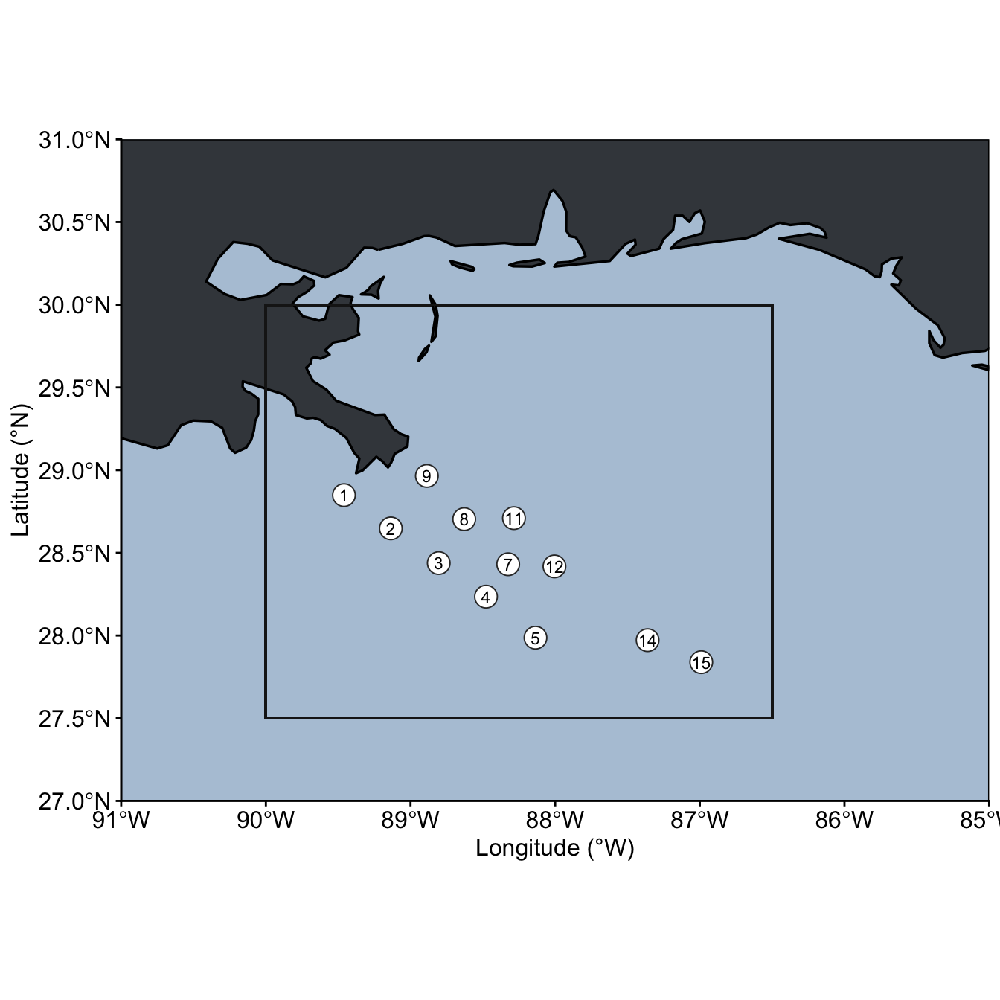
Map to save
# Left, bottom, right, top
INSET + inset_element(LARGE, 0.4, 0.4, 1.2, 1, align_to = "plot", clip = FALSE)6 ODV plots in R
Extract points you want and dimensions. Interpolate, subtract bathymetry if needed and move along from there.
# Manually extracted hexidecimal ODV colour palette
ODV_colours <- c("#b0020c", "#d31f2a", "#ffb300","#ffc000", "#75ab19","#27ab19", "#0db5e6", "#4626bd","#7139fe", "#aa24e0", "#d16cfa", "#d5a0eb")Station points and labels.
stn_labels <- env_metadata_toplot %>%
filter(Station %in% stns_in_study) %>%
select(Station, Latitude, Longitude, Depth) %>% distinct() %>%
mutate(TRANSECT = case_when(
(Station < 6) ~ 1,
(Station > 5 & Station < 10) ~ 2,
(Station >= 10) ~ 3
))Adding missing grouping variables: `Niskin`, `depth_feature`, `Date`,
`Time_UTC`# stn_labels
# max_stn_num <- max(stn_labels$Station)
stn_order_shore_offshore <- c(1, 2, 3, 4, 5, 9, 8, 7, 6, 10, 11, 12, 13, 15, 16, 17)
surf_labels <- stn_labels %>%
ungroup() %>%
filter(Depth < 5) %>%
select(Station, Latitude, Longitude) %>% distinct() %>%
mutate(TRANSECT = case_when(
(Station < 6) ~ 1,
(Station > 5 & Station < 10) ~ 2,
(Station >= 10) ~ 3
))Get surface profiles
surface_odv <- env_metadata_toplot %>%
# Isolate the three transects we're interested in and cover the study area.
filter(Station < 18) %>%
mutate(TRANSECT = case_when(
(Station < 6) ~ 1,
(Station > 5 & Station < 10) ~ 2,
(Station >= 10) ~ 3
)) %>%
filter(Depth < 5 & Depth > 2) %>%
group_by(Station, Latitude, Longitude, ENV_VARIABLE, TRANSECT) %>%
summarise(SURFACE_VALUE = mean(value)) %>%
ungroup() %>%
pivot_wider(names_from = ENV_VARIABLE, values_from = SURFACE_VALUE)`summarise()` has grouped output by 'Station', 'Latitude', 'Longitude',
'ENV_VARIABLE'. You can override using the `.groups` argument.Get depth profiles
depth_odv <- env_metadata_toplot %>%
# Isolate the three transects we're interested in and cover the study area.
filter(Station < 18) %>%
mutate(TRANSECT = case_when(
(Station < 6) ~ 1,
(Station > 5 & Station < 10) ~ 2,
(Station >= 10) ~ 3
)) %>%
group_by(Station, Latitude, Longitude, Depth, ENV_VARIABLE, TRANSECT) %>%
summarise(VALUE = mean(value)) %>%
ungroup() %>%
pivot_wider(names_from = ENV_VARIABLE, values_from = VALUE)`summarise()` has grouped output by 'Station', 'Latitude', 'Longitude',
'Depth', 'ENV_VARIABLE'. You can override using the `.groups` argument.6.1 Depth profiles
6.1.1 Temperature & Long
head(depth_odv)# A tibble: 6 × 14
Station Latitude Longitude Depth TRANSECT Oxygen Salinity Temperature NH4
<int> <dbl> <dbl> <dbl> <dbl> <dbl> <dbl> <dbl> <dbl>
1 1 28.8 89.5 2.48 1 3.41 27.3 30.5 NA
2 1 28.8 89.5 2.48 1 3.21 27.4 30.9 0.75
3 1 28.8 89.5 2.56 1 3.02 27.3 30.8 NA
4 1 28.8 89.5 2.62 1 3.00 26.5 31.0 NA
5 1 28.8 89.5 18.6 1 2.48 36.2 24.4 NA
6 1 28.8 89.5 18.6 1 2.38 36.2 24.4 NA
# ℹ 5 more variables: NO2 <dbl>, NO3 <dbl>, PO4 <dbl>, SIL <dbl>,
# Prok_count <dbl>Non-interpolated scatterplot
depth_odv %>%
ggplot(aes(x = Longitude, y = Depth)) +
geom_point(aes(color = Temperature), size = 2) +
# geom_point(aes(color = PROK_COUNT), size = 2) +
scale_colour_gradientn(colours = rev(ODV_colours),
limits = c(2, 32)) +
labs(y = "Depth (m)", x = "Longitude (°W)", colour = "Temperature (°C)") +
scale_y_reverse() + scale_x_reverse() +
theme_classic()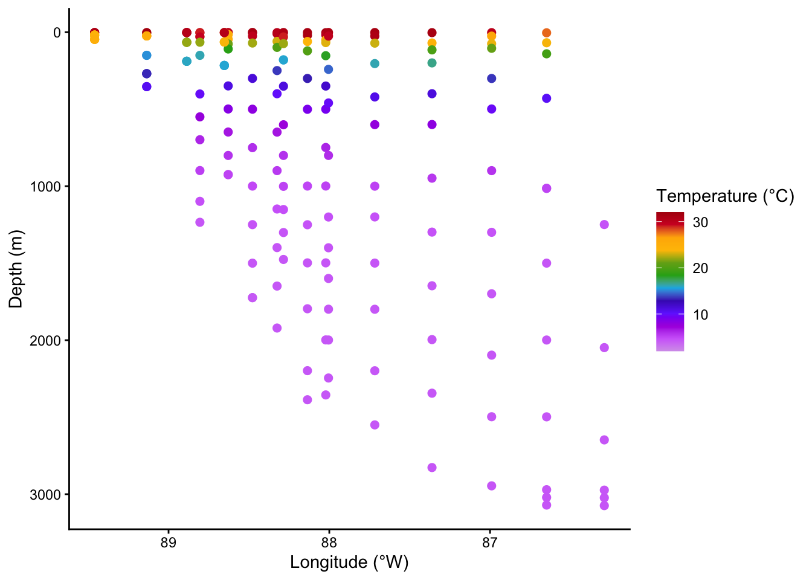
Interpolate step
library(MBA)
# ?mba.surf
head(depth_odv)# A tibble: 6 × 14
Station Latitude Longitude Depth TRANSECT Oxygen Salinity Temperature NH4
<int> <dbl> <dbl> <dbl> <dbl> <dbl> <dbl> <dbl> <dbl>
1 1 28.8 89.5 2.48 1 3.41 27.3 30.5 NA
2 1 28.8 89.5 2.48 1 3.21 27.4 30.9 0.75
3 1 28.8 89.5 2.56 1 3.02 27.3 30.8 NA
4 1 28.8 89.5 2.62 1 3.00 26.5 31.0 NA
5 1 28.8 89.5 18.6 1 2.48 36.2 24.4 NA
6 1 28.8 89.5 18.6 1 2.38 36.2 24.4 NA
# ℹ 5 more variables: NO2 <dbl>, NO3 <dbl>, PO4 <dbl>, SIL <dbl>,
# Prok_count <dbl># Interpolate
temp_mba <- mba.surf(depth_odv[c("Longitude", "Depth", "Temperature")], no.X = 300, no.Y = 300, extend = T)X, y, z are Longitude”, “DEPTH”, “TEMP”
dimnames(temp_mba$xyz.est$z) <- list(temp_mba$xyz.est$x, temp_mba$xyz.est$y)
# head(temp_mba)
temp_interpol <- reshape2::melt(temp_mba$xyz.est$z, varnames = c('LONGITUDE', 'DEPTH'), value.name = 'TEMPERATURE') %>%
filter(DEPTH > 0) %>%
mutate(TEMPERATURE = round(TEMPERATURE, 1))ggplot(data = temp_interpol, aes(x = LONGITUDE, y = DEPTH)) +
geom_raster(aes(fill = TEMPERATURE)) +
geom_contour(aes(z = TEMPERATURE), binwidth = 2, colour = "black", alpha = 0.2) +
geom_contour(aes(z = TEMPERATURE), breaks = 20, colour = "black") +
scale_fill_gradientn(colours = rev(ODV_colours),
limits = c(2, 32)) +
labs(y = "Depth (m)", x = "Longitude (°W)") +
scale_y_reverse() + scale_x_reverse() +
theme_classic() +
coord_cartesian(expand = F)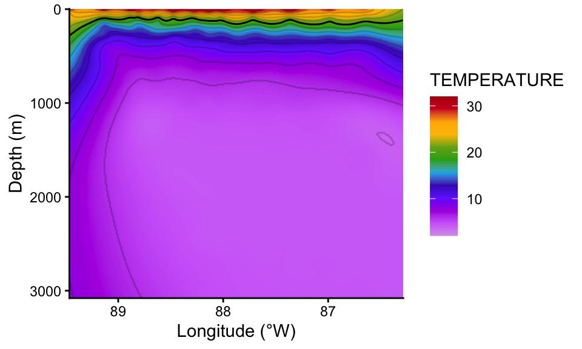
6.1.2 Surface params, lat, long
head(surface_odv)# A tibble: 6 × 13
Station Latitude Longitude TRANSECT NH4 NO2 NO3 Oxygen PO4 SIL
<int> <dbl> <dbl> <dbl> <dbl> <dbl> <dbl> <dbl> <dbl> <dbl>
1 1 28.8 89.5 1 0.75 0.38 0.23 3.16 0.18 10
2 2 28.6 89.1 1 0.8 0 0.05 3.74 0.16 4.1
3 3 28.4 88.8 1 0.17 0 0.02 2.82 0 1.2
4 4 28.2 88.5 1 0.31 0 0 3.47 0.04 1.8
5 5 28.0 88.1 1 0.36 0 0.03 3.42 0.02 2.5
6 6 28.2 88.0 2 0.34 0 0 3.64 0.04 1.9
# ℹ 3 more variables: Salinity <dbl>, Temperature <dbl>, Prok_count <dbl>Non-interpolated scatterplot
surface_odv %>%
ggplot(aes(x = Longitude, y = Latitude)) +
geom_point(aes(color = Temperature), size = 3) +
scale_colour_gradientn(colours = rev(ODV_colours)) +
labs(y = "Latitude (°N)", x = "Longitude (°W)", colour = "Temperature (°C)") +
scale_x_reverse() +
theme_classic()
Interpolate step
library(MBA)
# ?mba.surf
head(surface_odv)# A tibble: 6 × 13
Station Latitude Longitude TRANSECT NH4 NO2 NO3 Oxygen PO4 SIL
<int> <dbl> <dbl> <dbl> <dbl> <dbl> <dbl> <dbl> <dbl> <dbl>
1 1 28.8 89.5 1 0.75 0.38 0.23 3.16 0.18 10
2 2 28.6 89.1 1 0.8 0 0.05 3.74 0.16 4.1
3 3 28.4 88.8 1 0.17 0 0.02 2.82 0 1.2
4 4 28.2 88.5 1 0.31 0 0 3.47 0.04 1.8
5 5 28.0 88.1 1 0.36 0 0.03 3.42 0.02 2.5
6 6 28.2 88.0 2 0.34 0 0 3.64 0.04 1.9
# ℹ 3 more variables: Salinity <dbl>, Temperature <dbl>, Prok_count <dbl># Interpolate
temp_mba <- mba.surf(surface_odv[c("Longitude", "Latitude", "Temperature")],
no.X = 300, no.Y = 300, extend = F)X, y, z are Longitude”, “DEPTH”, “TEMP”
dimnames(temp_mba$xyz.est$z) <- list(temp_mba$xyz.est$x, temp_mba$xyz.est$y)
# head(temp_mba)
#
temp_surface_interpol <- reshape2::melt(temp_mba$xyz.est$z, varnames = c("Longitude", "Latitude"), value.name = 'TEMPERATURE') %>%
mutate(TEMPERATURE = round(TEMPERATURE, 1))
head(temp_surface_interpol) Longitude Latitude TEMPERATURE
1 86.64800 27.7 27.8
2 86.65740 27.7 NA
3 86.66681 27.7 NA
4 86.67621 27.7 NA
5 86.68562 27.7 NA
6 86.69502 27.7 NAsurface_temperature <- temp_surface_interpol %>%
ggplot(aes(x = Longitude, y = Latitude)) +
geom_raster(aes(fill = TEMPERATURE)) +
geom_contour(aes(z = TEMPERATURE), binwidth = 2, colour = "black", alpha = 0.2) +
geom_contour(aes(z = TEMPERATURE), breaks = 20, colour = "black") +
# Add data points
geom_point(data = surface_odv, aes(x = Longitude, y = Latitude)) +
# ggrepel::geom_text_repel(data = surf_labels, aes(x = Longitude, y = Latitude, label = Station), box.padding = 0.1) +
geom_text(data = surface_odv, aes(x = Longitude, y = Latitude, label = Station),
position = position_dodge(width = 0.3),
hjust = 0.5, vjust = 1, color= "black") +
scale_fill_gradientn(colours = rev(ODV_colours),
breaks = c(24, 26, 28, 30, 32)) +
labs(y = "Latitude (°N)", x = "Longitude (°W)", fill = "Temperature (°C)") +
scale_x_reverse() +
theme_classic() +
coord_cartesian(expand = F) +
theme(axis.text = element_text(size = 10, colour="black"))
surface_temperature
Temperature with map
# MAP
ggplot(data = (world %>% filter(subunit == "United States"))) +
geom_sf(color = "black", linewidth = 0.6, fill = "grey10", alpha = 0.6) +
# Set lat long region to show:
coord_sf(xlim = c(-90, -86.75), ylim = c(27.5, 29.5), expand = FALSE) +
# Overlay with temperature
geom_raster(data = temp_surface_interpol, aes(fill = TEMPERATURE, x = Longitude, y = Latitude)) +
geom_contour(data = temp_surface_interpol, aes(z = TEMPERATURE, x = Longitude, y = Latitude), binwidth = 2, colour = "black", alpha = 0.2) +
geom_contour(data = temp_surface_interpol, aes(z = TEMPERATURE,x = Longitude, y = Latitude), breaks = 20, colour = "black") +
# Add data points for stations
geom_point(data = surface_odv, aes(x = Longitude, y = Latitude)) +
ggrepel::geom_label_repel(data = surf_labels, aes(x = Longitude, y = Latitude, label = Station)) +
# geom_text(data = surface_odv, aes(x = Longitude, y = Latitude, label = Station), position = position_dodge(width = 0.1),
# hjust = 0.5, vjust = 1, color= "black") +
scale_fill_gradientn(colours = rev(ODV_colours), na.value=NA) +
labs(y = "Latitude (°N)", x = "Longitude (°W)", fill = "Temperature (°C)") +
scale_x_reverse() +
theme_classic() +
theme(axis.text = element_text(size = 10, colour="black"),
panel.background = element_rect(fill = "#B4C7D9"),
panel.border = element_rect(fill = NA),
aspect.ratio = 1)Warning: Removed 61578 rows containing non-finite outside the scale range
(`stat_contour()`).
Removed 61578 rows containing non-finite outside the scale range
(`stat_contour()`).Warning: `stat_contour()`: Zero contours were generatedWarning in min(x): no non-missing arguments to min; returning InfWarning in max(x): no non-missing arguments to max; returning -InfWarning: Removed 61578 rows containing missing values or values outside the scale range
(`geom_raster()`).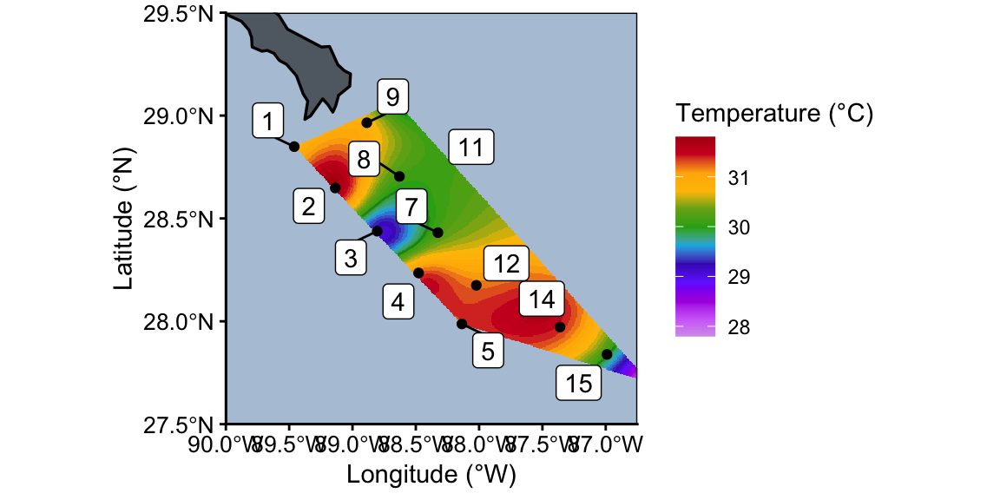
Temperature Surface
# MAP
ggplot(data = (world %>% filter(subunit == "United States"))) +
geom_sf(color = "black", linewidth = 0.6, fill = "grey10", alpha = 0.6) +
# Set lat long region to show:
coord_sf(xlim = c(-90, -86.75), ylim = c(27.5, 29.5), expand = FALSE) +
# Overlay with temperature
geom_raster(data = temp_surface_interpol, aes(fill = TEMPERATURE, x = Longitude, y = Latitude)) +
geom_contour(data = temp_surface_interpol, aes(z = TEMPERATURE, x = Longitude, y = Latitude), binwidth = 2, colour = "black", alpha = 0.2) +
geom_contour(data = temp_surface_interpol, aes(z = TEMPERATURE,x = Longitude, y = Latitude), breaks = 20, colour = "black") +
# Add data points for stations
geom_point(data = surf_labels, aes(x = Longitude, y = Latitude)) +
geom_text(data = surf_labels, aes(x = Longitude, y = Latitude, label = Station), position = position_dodge(width = 0.1),
hjust = 0.5, vjust = 1, color= "black") +
scale_fill_gradientn(colours = rev(ODV_colours), na.value=NA) +
labs(y = "Latitude (°N)", x = "Longitude (°W)", fill = "Temperature (°C)") +
scale_x_reverse() +
theme_classic() +
theme(axis.text = element_text(size = 10, colour="black"),
panel.background = element_rect(fill = "#B4C7D9"),
panel.border = element_rect(fill = NA),
aspect.ratio = 1)
6.2 Fxn for surface params, lat, long
Set up a data frame with all parameters as columns.
set.seed(123)
# Put PARAM in quotes
#limits = c(2, 32)
interpolate_lat_long_env <- function(df, PARAM, min, max, TITLE){
# Interpolate
output_mba <- mba.surf(df[c("Longitude", "Latitude", PARAM)],
no.X = 300, no.Y = 300, extend = F)
# Extract interpolated values
dimnames(output_mba$xyz.est$z) <- list(output_mba$xyz.est$x, output_mba$xyz.est$y)
#
envs_interpol <- reshape2::melt(output_mba$xyz.est$z,
varnames = c("Longitude", "Latitude"),
value.name = PARAM) %>%
select(Longitude, Latitude, VALUE = !!PARAM) %>%
mutate(VALUE = round(VALUE, 1))
# MAP
ggplot(data = (world %>% filter(subunit == "United States"))) +
geom_sf(color = "black", linewidth = 0.6, fill = "grey10", alpha = 0.6) +
# Set lat long region to show:
coord_sf(xlim = c(-90, -86.75), ylim = c(27.5, 29.5), expand = FALSE) +
# Overlay with temperature
geom_raster(data = envs_interpol, aes(fill = VALUE, x = Longitude, y = Latitude)) +
geom_contour(data = envs_interpol, aes(z = VALUE, x = Longitude, y = Latitude), binwidth = 2, colour = "black", alpha = 0.2) +
geom_contour(data = envs_interpol, aes(z = VALUE,x = Longitude, y = Latitude), breaks = 20, colour = "black") +
# Add data points for stations
geom_point(data = surf_labels, aes(x = Longitude, y = Latitude)) +
ggrepel::geom_text_repel(data = surf_labels,
aes(x = Longitude, y = Latitude, label = Station),
direction = "y", nudge_x = 0.1, nudge_y = 0) +
scale_fill_gradientn(colours = rev(ODV_colours),
na.value = NA,
limits = c(min, max)) +
labs(y = "Latitude (°N)", x = "Longitude (°W)", fill = TITLE) +
scale_x_reverse() +
theme_classic() +
theme(axis.text = element_text(size = 10, colour="black"),
panel.background = element_rect(fill = "#B4C7D9"),
panel.border = element_rect(fill = NA),
aspect.ratio = 1,
legend.background = element_blank(),
legend.text = element_text(size = 10, colour="black", face = "bold"),
legend.title = element_text(size = 10, colour="black", face = "bold", hjust = 1, vjust = 1),
legend.ticks = element_line(color = "black"),
legend.position=c(0.83,.75))
}
# interpolate_lat_long_env(surface_odv, "SURFACE_TEMP", "Temperature (°C)")
colnames(surface_odv) [1] "Station" "Latitude" "Longitude" "TRANSECT" "NH4"
[6] "NO2" "NO3" "Oxygen" "PO4" "SIL"
[11] "Salinity" "Temperature" "Prok_count" Parameters to use in function: “NH4” “NO2” “NO3” “Oxygen”
[9] “PO4” “SIL” “Salinity” “Temperature”
# TEMP: 2,32 (18, 32)
# Salinity: 30, 38 (25, 37)
# o2: 2, 5
surf_temp <- (interpolate_lat_long_env(surface_odv, "Temperature", 25, 32,
"Temperature (°C)")); surf_tempsurf_sal <- interpolate_lat_long_env(surface_odv, "Salinity", 25, 37, "Salinity"); surf_sal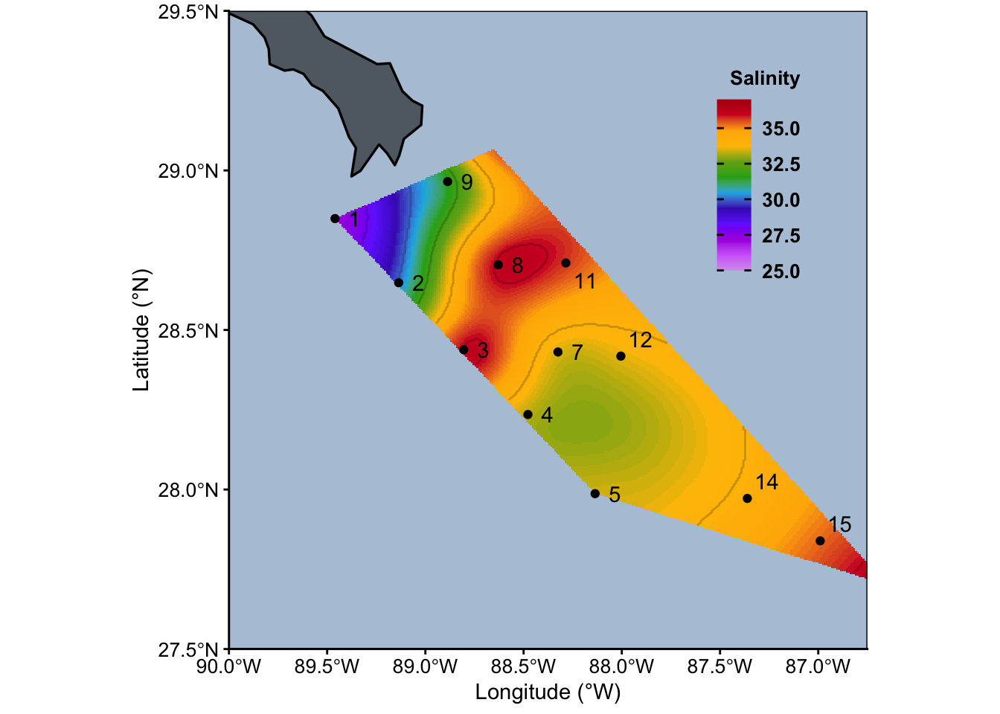
surf_oxy <- interpolate_lat_long_env(surface_odv, "Oxygen", 2, 5, (expression(bold(O[2]*" "*"ml/L")))); surf_oxy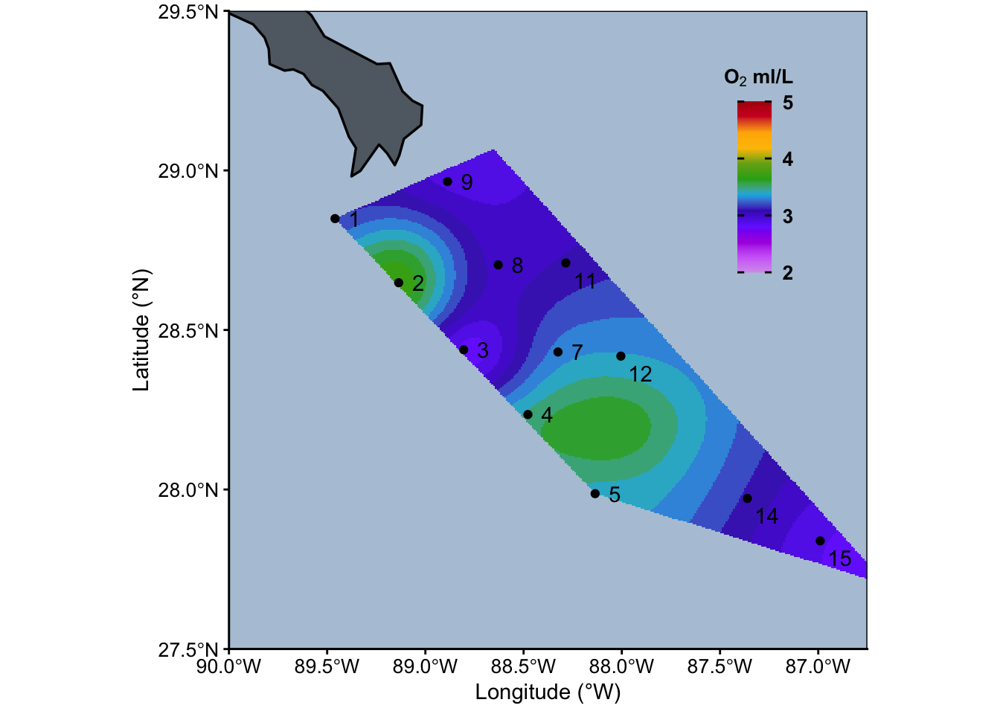
now: “NH4” “NO2” “NO3” “PO4” “SIL”
# expression("S"["in"] ~ "[W" ~ m^-2~"]")
# NH4: 0, 1.5
# NO3: 0, 30
# NO2: 0, 0.5
# PO4: 0, 2
# Sio: 2, 25 (0,15)
surf_nh4 <- interpolate_lat_long_env(surface_odv, "NH4",0, 1.5, expression(bold("NH"["4"]*" µmol/L")))
surf_no2 <- interpolate_lat_long_env(surface_odv, "NO2", 0, 0.5, expression(bold("NO"["2"]*" µmol/L")))
surf_no3 <- interpolate_lat_long_env(surface_odv, "NO3", 0, 30, expression(bold("NO"["3"]*" µmol/L")))
surf_po4 <- interpolate_lat_long_env(surface_odv, "PO4", 0, 2, expression(bold("PO"["4"]*" µmol/L")))
surf_sil <- interpolate_lat_long_env(surface_odv, "SIL", 0, 15, expression(bold("SiO" ["4"] ^"2-"*" µmol/L"))); surf_sil
6.2.1 Compile all surface plots
surf_temp + surf_sal + surf_oxy + surf_sil + surf_nh4 + surf_no3 + surf_no2 + surf_po4 + plot_layout(ncol = 4) + plot_annotation(tag_levels = "A")
# ?plot_annotation6.3 Fxn for depth parameters
# df_all <- depth_odv
# transect <- "transect1"
# PARAM <- "TEMP"
# PARAM
# as.name(PARAM)
# TITLE <- "Temperature"
# Put PARAM in quotes
interpolate_depth_long_env <- function(df_all, transect, PARAM, min, max, TITLE){
param <- as.name(PARAM)
# Isolate transect of interest
df <- df_all %>%
filter(TRANSECT == transect) %>%
select(Longitude, Depth, param) %>%
drop_na()
#
df_labels <- stn_labels %>%
filter(TRANSECT == transect)
#
# Get specific transect Longitude
max_long <- round(max(df$Longitude), 0) + 1
min_long <- round(min(df$Longitude), 0) - 1
#
# Interpolate
output_mba <- mba.surf(df[c("Longitude", "Depth", PARAM)],
no.X = 300, no.Y = 300, extend = F)
# Extract interpolated values
dimnames(output_mba$xyz.est$z) <- list(output_mba$xyz.est$x, output_mba$xyz.est$y)
#
envs_interpol <- reshape2::melt(output_mba$xyz.est$z,
varnames = c("Longitude", "Depth"),
value.name = PARAM) %>%
select(Longitude, Depth, VALUE = !!PARAM) %>%
mutate(VALUE = round(VALUE, 1)) %>%
filter(Longitude > min_long & Longitude < max_long)
#
# Plot
envs_interpol %>%
ggplot(aes(x = Longitude, y = Depth)) +
geom_raster(aes(fill = VALUE)) +
geom_contour(aes(z = VALUE), binwidth = 2, colour = "black", alpha = 0.2) +
geom_contour(aes(z = VALUE), breaks = 20, colour = "black") +
# Add data points
geom_point(data = df_labels, aes(x = Longitude, y = Depth)) +
geom_text(data = df_labels,
aes(x = Longitude, y = -80, label = Station),
position = position_dodge(width = 0.1),
hjust = 0.5, vjust = 0, color= "black") +
scale_fill_gradientn(colours = rev(ODV_colours),
na.value = NA,
limits = c(min, max)) +
labs(y = "Depth (m)", x = "Longitude (°W)", fill = TITLE) +
scale_x_reverse() + scale_y_reverse() +
theme_classic() +
theme(axis.text = element_text(size = 10, colour="black"),
panel.border = element_rect(fill = NA),
aspect.ratio = 1,
legend.background = element_blank(),
legend.text = element_text(size = 10, colour="black", face = "bold"),
legend.title = element_text(size = 10, colour="black", face = "bold", hjust = 0, vjust = 1),
legend.ticks = element_line(color = "black"),
legend.position=c(0.2,0.26))
}
# interpolate_depth_long_env(depth_odv, 1 ,"Temperature", "Temperature (°C)")colnames(depth_odv) [1] "Station" "Latitude" "Longitude" "Depth" "TRANSECT"
[6] "Oxygen" "Salinity" "Temperature" "NH4" "NO2"
[11] "NO3" "PO4" "SIL" "Prok_count" # unique(depth_odv$TRANSECT)6.3.1 Transect 1
# TEMP: depth: 2,32 surface: (18, 32)
# Salinity: 30, 38 (25, 37)
# o2: 2, 5
# Sio: 2, 25 (0,15)
# NH4: 0, 1.5
# NO3: 0, 30
# NO2: 0, 0.5
# PO4: 0, 2(interpolate_depth_long_env(depth_odv, 1, "Temperature", 2, 32,"Temperature (°C)")) +
(interpolate_depth_long_env(depth_odv, 1, "Salinity", 25, 37, "Salinity")) +
(interpolate_depth_long_env(depth_odv, 1, "Oxygen", 2, 5, (expression(bold(O[2]*" "*"ml/L"))))) +
(interpolate_depth_long_env(depth_odv, 1, "SIL", 1, 28, expression(bold("SiO" ["4"] ^"2-"*" µmol/L")))) +
#
(interpolate_depth_long_env(depth_odv, 1, "NH4", 0, 1.5, expression(bold("NH"["4"]*" µmol/L")))) +
(interpolate_depth_long_env(depth_odv, 1, "NO2", 0, 0.5, expression(bold("NO"["2"]*" µmol/L")))) +
(interpolate_depth_long_env(depth_odv, 1, "NO3", 0, 31, expression(bold("NO"["3"]*" µmol/L")))) +
(interpolate_depth_long_env(depth_odv, 1, "PO4", 0, 2.5, expression(bold("PO"["4"]*" µmol/L")))) +
plot_annotation(tag_levels = "A", title = "Transect 1") +
plot_layout(ncol = 4)
6.3.2 Transect 2
# (interpolate_depth_long_env(depth_odv, 2, "Temperature", "Temperature (°C)")) +
# (interpolate_depth_long_env(depth_odv, 2, "Salinity", "Salinity")) +
# (interpolate_depth_long_env(depth_odv, 2, "Oxygen", (expression(bold(O[2]*" "*"ml/L"))))) +
# (interpolate_depth_long_env(depth_odv, 2, "SIL", expression(bold("SiO" ["4"] ^"2-"*" µmol/L")))) +
# #
# (interpolate_depth_long_env(depth_odv, 2, "NH4", expression(bold("NH"["4"]*" µmol/L")))) +
# (interpolate_depth_long_env(depth_odv, 2, "NO2", expression(bold("NO"["2"]*" µmol/L")))) +
# (interpolate_depth_long_env(depth_odv, 2, "NO3", expression(bold("NO"["3"]*" µmol/L")))) +
# (interpolate_depth_long_env(depth_odv, 2, "PO4", expression(bold("PO"["4"]*" µmol/L")))) +
# plot_annotation(tag_levels = "A", title = "Transect 1") +
# plot_layout(ncol = 4)6.3.3 Transect 3
# (interpolate_depth_long_env(depth_odv, 3, "Temperature", "Temperature (°C)")) +
# (interpolate_depth_long_env(depth_odv, 3, "Salinity", "Salinity")) +
# (interpolate_depth_long_env(depth_odv, 3, "Oxygen", (expression(bold(O[2]*" "*"ml/L"))))) +
# (interpolate_depth_long_env(depth_odv, 3, "SIL", expression(bold("SiO" ["4"] ^"2-"*" µmol/L")))) +
# #
# (interpolate_depth_long_env(depth_odv, 3, "NH4", expression(bold("NH"["4"]*" µmol/L")))) +
# (interpolate_depth_long_env(depth_odv, 3, "NO2", expression(bold("NO"["2"]*" µmol/L")))) +
# (interpolate_depth_long_env(depth_odv, 3, "NO3", expression(bold("NO"["3"]*" µmol/L")))) +
# (interpolate_depth_long_env(depth_odv, 3, "PO4", expression(bold("PO"["4"]*" µmol/L")))) +
# plot_annotation(tag_levels = "A", title = "Transect 1") +
# plot_layout(ncol = 4)7 Compiled physical parameters
# TEMP: 2,32 (18, 32)
# Salinity: 30, 38 (25, 37)
# o2: 2, 5
# Sio: 2, 25 (0,15)
# NH4: 0, 1.5
# NO3: 0, 30
# NO2: 0, 0.5
# PO4: 0, 2# Temperature
surf_temp +
(interpolate_depth_long_env(depth_odv, 1, "Temperature", 2, 32, "Temperature (°C)")) +
(interpolate_depth_long_env(depth_odv, 2, "Temperature", 2, 32, "Temperature (°C)")) +
(interpolate_depth_long_env(depth_odv, 3, "Temperature", 2, 32, "Temperature (°C)")) +
surf_sal +
(interpolate_depth_long_env(depth_odv, 1, "Salinity",25, 27, "Salinity")) +
(interpolate_depth_long_env(depth_odv, 2, "Salinity", 25, 27, "Salinity")) +
(interpolate_depth_long_env(depth_odv, 3, "Salinity", 25, 27, "Salinity")) +
surf_oxy +
(interpolate_depth_long_env(depth_odv, 1, "Oxygen", 2, 5, (expression(bold(O[2]*" "*"ml/L"))))) +
(interpolate_depth_long_env(depth_odv, 2, "Oxygen", 2, 5, (expression(bold(O[2]*" "*"ml/L"))))) +
(interpolate_depth_long_env(depth_odv, 3, "Oxygen", 2, 5, (expression(bold(O[2]*" "*"ml/L"))))) +
surf_sil +
(interpolate_depth_long_env(depth_odv, 1, "SIL", 1, 28, expression(bold("SiO" ["4"] ^"2-"*" µmol/L")))) +
(interpolate_depth_long_env(depth_odv, 2, "SIL", 1, 28, expression(bold("SiO" ["4"] ^"2-"*" µmol/L")))) +
(interpolate_depth_long_env(depth_odv, 3, "SIL", 1, 28, expression(bold("SiO" ["4"] ^"2-"*" µmol/L")))) +
plot_annotation(tag_levels = "A", title = "") +
plot_layout(ncol = 4)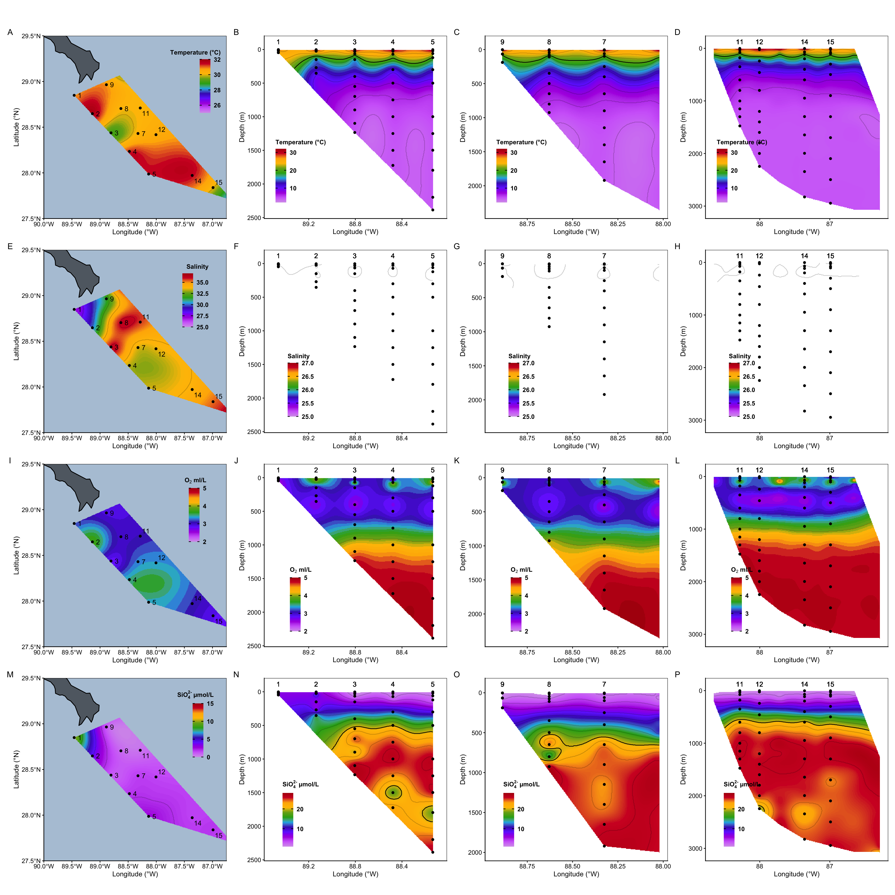
surf_nh4 +
(interpolate_depth_long_env(depth_odv, 1, "NH4", 0, 1.5, expression(bold("NH"["4"]*" µmol/L")))) +
(interpolate_depth_long_env(depth_odv, 2, "NH4", 0, 1.5,expression(bold("NH"["4"]*" µmol/L")))) +
(interpolate_depth_long_env(depth_odv, 3, "NH4", 0, 1.5,expression(bold("NH"["4"]*" µmol/L")))) +
#
surf_no3 +
(interpolate_depth_long_env(depth_odv, 1, "NO3", 0, 31, expression(bold("NO"["3"]*" µmol/L")))) +
(interpolate_depth_long_env(depth_odv, 2, "NO3", 0, 31, expression(bold("NO"["3"]*" µmol/L")))) +
(interpolate_depth_long_env(depth_odv, 3, "NO3", 0, 31, expression(bold("NO"["3"]*" µmol/L")))) +
#
surf_no2 +
(interpolate_depth_long_env(depth_odv, 1, "NO2", 0, 0.5, expression(bold("NO"["2"]*" µmol/L")))) +
(interpolate_depth_long_env(depth_odv, 2, "NO2", 0, 0.5, expression(bold("NO"["2"]*" µmol/L")))) +
(interpolate_depth_long_env(depth_odv, 3, "NO2", 0, 0.5, expression(bold("NO"["2"]*" µmol/L")))) +
#
surf_po4 +
(interpolate_depth_long_env(depth_odv, 1, "PO4", 0, 2.5, expression(bold("PO"["4"]*" µmol/L")))) +
(interpolate_depth_long_env(depth_odv, 2, "PO4", 0, 2.5, expression(bold("PO"["4"]*" µmol/L")))) +
(interpolate_depth_long_env(depth_odv, 3, "PO4", 0, 2.5, expression(bold("PO"["4"]*" µmol/L")))) +
#
plot_annotation(tag_levels = "A", title = "Transect 1") +
plot_layout(ncol = 4)
8 ASVs on map
head(asv_long_avg_wtax)# A tibble: 6 × 37
FeatureID Taxon DIVISION SUPERGROUP_CLASS Supergroup_simplified Supergroup
<chr> <chr> <chr> <chr> <chr> <chr>
1 0001b2ea4223… Euka… Dinofla… Dinoflagellata-… TSAR-Dinoflagellata TSAR
2 0004be388d73… Euka… Dinofla… Dinoflagellata-… TSAR-Dinoflagellata TSAR
3 000761c7389a… Euka… Dinofla… Dinoflagellata-… TSAR-Dinoflagellata TSAR
4 000964551660… Euka… Radiola… Radiolaria-Acan… TSAR-Radiolaria TSAR
5 000964551660… Euka… Radiola… Radiolaria-Acan… TSAR-Radiolaria TSAR
6 000964551660… Euka… Radiola… Radiolaria-Acan… TSAR-Radiolaria TSAR
# ℹ 31 more variables: Division <chr>, Subdivision <chr>, Class <chr>,
# Order <chr>, Family <chr>, Genus <chr>, Species <chr>, STN_NISKIN <chr>,
# Station <int>, Niskin <int>, Depth <dbl>, depth_feature <chr>,
# Latitude <dbl>, Longitude <dbl>, Temperature <dbl>, Salinity <dbl>,
# Oxygen <dbl>, NH4 <dbl>, NO2 <dbl>, NO3 <dbl>, PO4 <dbl>, SIL <dbl>,
# Prok_count <dbl>, STN_CATEGORY_3 <chr>, STN_CATEGORY_4 <chr>,
# STN_ORDER <fct>, TRANSECT <fct>, DEPTH_ORDER <fct>, DIST_OUTFLOW <dbl>, …8.1 Surface ASV profiles
Surface lat/long
surface_asv_odv <- asv_long_avg_wtax %>%
# Isolate surface & average across replicates
filter(Depth < 5) %>%
ungroup() %>%
group_by(Station, Latitude, Longitude, TRANSECT) %>%
summarise(ASV_COUNT = n())`summarise()` has grouped output by 'Station', 'Latitude', 'Longitude'. You can
override using the `.groups` argument.Interpolate function for ASVs:
## Testing
# df <- surface_asv_odv
# PARAM <- "ASV_COUNT"
# TITLE <- "Total ASVs"
# Put PARAM in quotes
interpolate_lat_long_asv <- function(df, PARAM, TITLE){
# Interpolate
output_mba <- mba.surf(df[c("Longitude", "Latitude", PARAM)],
no.X = 150, no.Y = 150, extend = F)
# Extract interpolated values
dimnames(output_mba$xyz.est$z) <- list(output_mba$xyz.est$x, output_mba$xyz.est$y)
#
envs_interpol <- reshape2::melt(output_mba$xyz.est$z,
varnames = c("Longitude", "Latitude"),
value.name = PARAM) %>%
select(Longitude, Latitude, VALUE = !!PARAM) %>%
mutate(VALUE = round(VALUE, 1))
head(envs_interpol)
# MAP
ggplot(data = (world %>% filter(subunit == "United States"))) +
geom_sf(color = "black", linewidth = 0.6, fill = "grey10", alpha = 0.6) +
# Set lat long region to show:
coord_sf(xlim = c(-90, -86.75), ylim = c(27.5, 29.5), expand = FALSE) +
# Overlay with temperature
geom_raster(data = envs_interpol, aes(fill = VALUE, x = Longitude, y = Latitude)) +
geom_contour(data = envs_interpol, aes(z = VALUE, x = Longitude, y = Latitude), binwidth = 2, colour = NA, alpha = 0.2) +
geom_contour(data = envs_interpol, aes(z = VALUE,x = Longitude, y = Latitude), breaks = 20, colour = NA) +
# Add data points for stations
ggrepel::geom_text_repel(data = surf_labels,
aes(x = Longitude, y = Latitude, label = Station),
direction = "y", nudge_x = 0.1, nudge_y = 0) +
geom_point(data = surf_labels, aes(x = Longitude, y = Latitude)) +
scale_fill_fermenter(type = "seq", palette = "Reds", direction = 1, na.value = NA) +
# scale_fill_gradientn(colours = rev(ODV_colours), na.value=NA) +
labs(y = "Latitude (°N)", x = "Longitude (°W)", fill = TITLE) +
scale_x_reverse() +
theme_classic() +
theme(axis.text = element_text(size = 10, colour="black"),
panel.background = element_rect(fill = "#B4C7D9"),
panel.border = element_rect(fill = NA),
aspect.ratio = 1,
legend.text = element_text(size = 10, colour="black", face = "bold"),
legend.background = element_blank(),
legend.title = element_text(size = 10, colour="black", face = "bold", hjust = 1, vjust = 1),
legend.ticks = element_line(color = "black"),
legend.position=c(0.78,.75))
}8.1.1 Total ASVs
surf_all_asv <- interpolate_lat_long_asv(surface_asv_odv, "ASV_COUNT", "Total ASVs")
surf_all_asv
8.1.2 Taxa by ASVs
bytaxa_surface_asvs <- asv_long_avg_wtax %>%
# Isolate surface & average across replicates
filter(Depth < 5) %>%
ungroup() %>%
group_by(SUPERGROUP_CLASS, Station, Latitude, Longitude, TRANSECT) %>%
summarise(ASV_COUNT = n())`summarise()` has grouped output by 'SUPERGROUP_CLASS', 'Station', 'Latitude',
'Longitude'. You can override using the `.groups` argument.# Dinoflagellata-Syndiniales
interpolate_lat_long_asv((bytaxa_surface_asvs %>%
filter(SUPERGROUP_CLASS == "Dinoflagellata-Syndiniales")), "ASV_COUNT", "Syndiniales ASVs")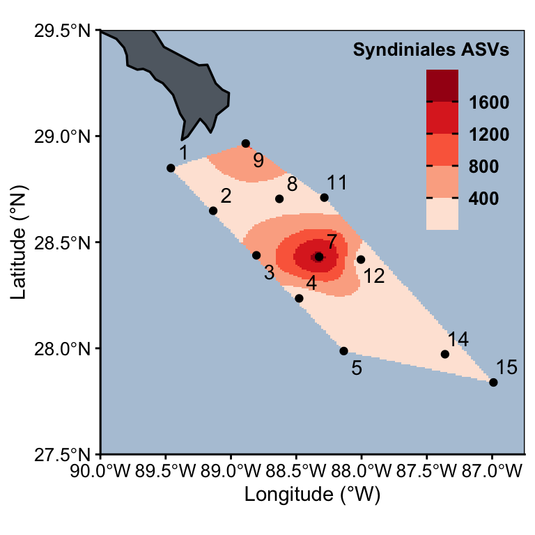
# unique(bytaxa_surface_asvs$SUPERGROUP_CLASS)
# Dinoflagellata-Syndiniales
interpolate_lat_long_asv((bytaxa_surface_asvs %>%
filter(SUPERGROUP_CLASS == "Gyrista-Bacillariophyceae")), "ASV_COUNT", "Diatom ASVs")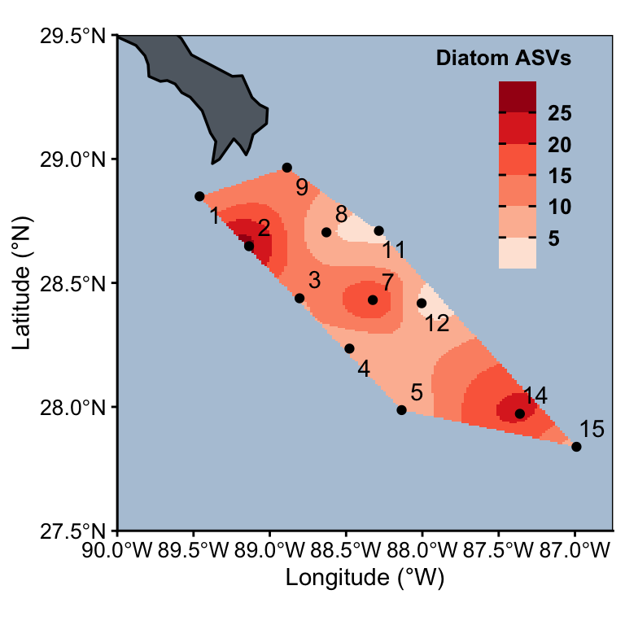
interpolate_lat_long_asv((bytaxa_surface_asvs %>%
filter(SUPERGROUP_CLASS == "Gyrista-Chrysophyceae")), "ASV_COUNT", "Chrysophyte ASVs")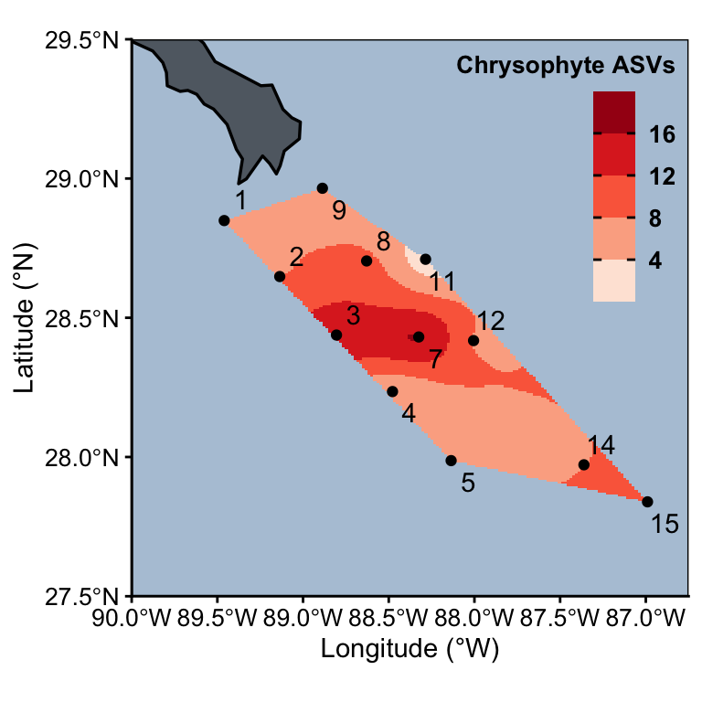
interpolate_lat_long_asv((bytaxa_surface_asvs %>%
filter(SUPERGROUP_CLASS == "Gyrista-Pelagophyceae")), "ASV_COUNT", "Pelagophyceae ASVs")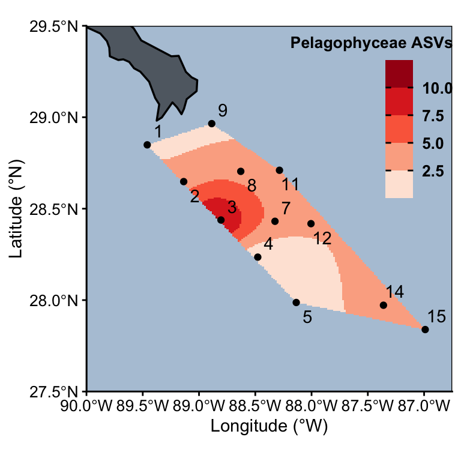
“Radiolaria-Polycystinea”
“Radiolaria-RAD”
“Radiolaria-Radiolaria”
interpolate_lat_long_asv((bytaxa_surface_asvs %>%
filter(SUPERGROUP_CLASS == "Radiolaria-Acantharea")), "ASV_COUNT", "Acantharea ASVs")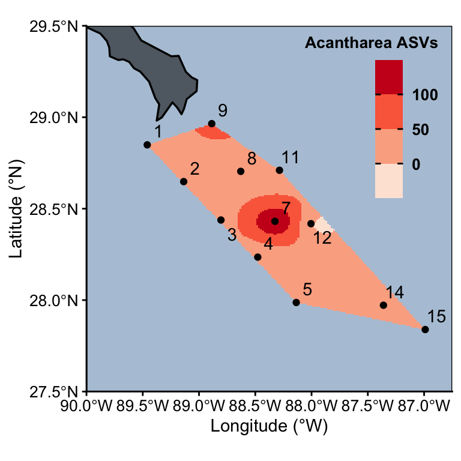
interpolate_lat_long_asv((bytaxa_surface_asvs %>%
filter(SUPERGROUP_CLASS == "Radiolaria-Polycystinea")), "ASV_COUNT", "Polycystinea ASVs")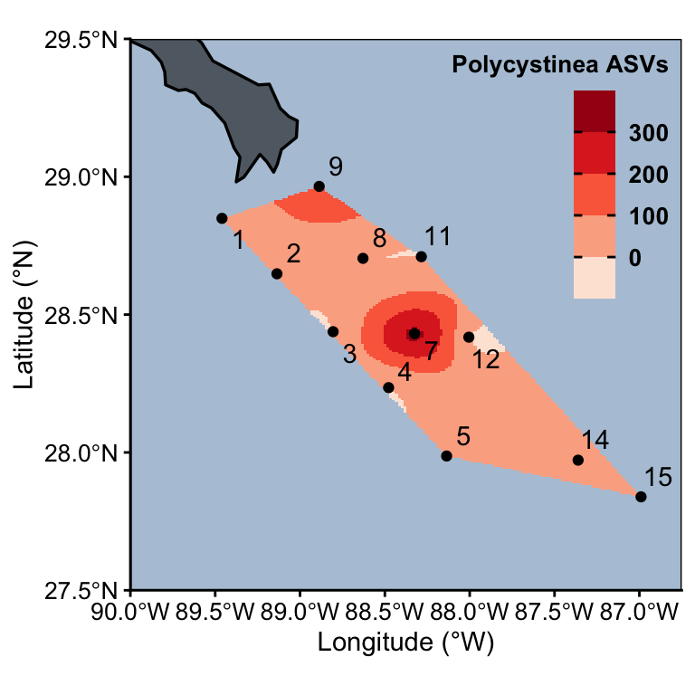
interpolate_lat_long_asv((bytaxa_surface_asvs %>%
filter(SUPERGROUP_CLASS == "Radiolaria-RAD")), "ASV_COUNT", "RAD ASVs")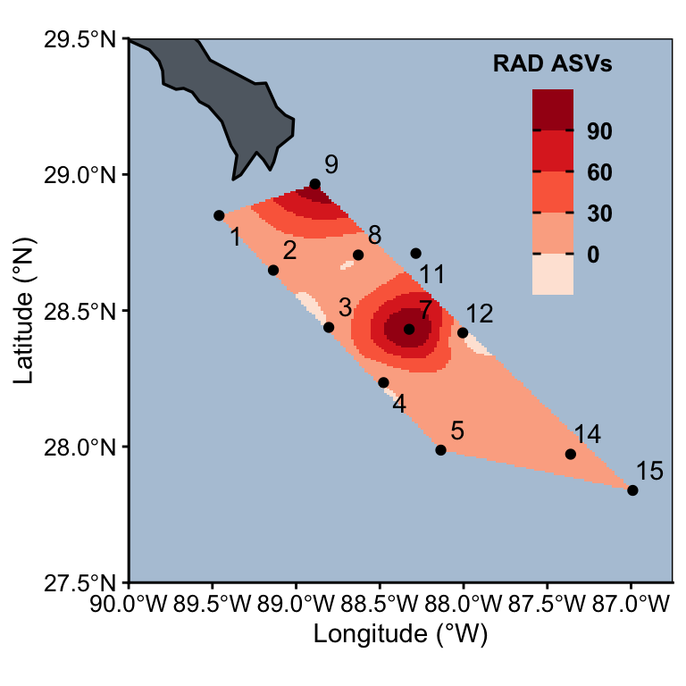
# interpolate_lat_long_asv((bytaxa_surface_asvs %>%
# filter(SUPERGROUP_CLASS == "Radiolaria-Radiolaria")), "ASV_COUNT", "Radiolaria ASVs")8.2 Depth ASV profiles
depth_asv_odv <- asv_long_avg_wtax %>%
filter(!is.na(Latitude)) %>%
ungroup() %>%
group_by(Station, Latitude, Longitude, Depth, TRANSECT) %>%
summarise(ASV_COUNT = n())`summarise()` has grouped output by 'Station', 'Latitude', 'Longitude',
'Depth'. You can override using the `.groups` argument.head(depth_asv_odv)# A tibble: 6 × 6
# Groups: Station, Latitude, Longitude, Depth [6]
Station Latitude Longitude Depth TRANSECT ASV_COUNT
<int> <dbl> <dbl> <dbl> <fct> <int>
1 1 28.8 89.5 2.48 transect1 635
2 1 28.8 89.5 18.6 transect1 1908
3 2 28.6 89.1 2.9 transect1 1089
4 2 28.6 89.1 24.2 transect1 2396
5 2 28.6 89.1 150. transect1 2858
6 2 28.6 89.1 269. transect1 2279# unique(depth_asv_odv$TRANSECT)# Put PARAM in quotes
interpolate_depth_long_asv <- function(df_all, transect, PARAM, min, max, TITLE){
# Isolate transect of interest
df <- df_all %>%
filter(TRANSECT == transect)
#
# Get specific transect Longitude
max_long <- round(max(df$Longitude), 0) + 1
min_long <- round(min(df$Longitude), 0) - 1
#
# Interpolate
output_mba <- mba.surf(df[c("Longitude", "Depth", PARAM)],
no.X = 150, no.Y = 150, extend = F)
# Extract interpolated values
dimnames(output_mba$xyz.est$z) <- list(output_mba$xyz.est$x, output_mba$xyz.est$y)
#
envs_interpol <- reshape2::melt(output_mba$xyz.est$z,
varnames = c("Longitude", "Depth"),
value.name = PARAM) %>%
select(Longitude, Depth, VALUE = !!PARAM) %>%
mutate(VALUE = round(VALUE, 1)) %>%
filter(Longitude > min_long & Longitude < max_long)
#
# Plot
envs_interpol %>%
ggplot(aes(x = Longitude, y = Depth)) +
geom_raster(aes(fill = VALUE)) +
geom_contour(aes(z = VALUE), binwidth = 2, colour = NA, alpha = 0.2) +
geom_contour(aes(z = VALUE), breaks = 20, colour = NA) +
# Add data points
geom_point(data = df, aes(x = Longitude, y = Depth)) +
geom_text(data = df,
aes(x = Longitude, y = -60, label = df$Station),
position = position_dodge(width = 0.1),
hjust = 0.5, vjust = 0, color= "black") +
scale_fill_fermenter(type = "seq", palette = "Reds",
direction = 1, na.value = NA,
limits = c(min, max)) +
labs(y = "Depth (m)", x = "Longitude (°W)", fill = TITLE) +
scale_x_reverse() + scale_y_reverse() +
theme_classic() +
theme(axis.text = element_text(size = 10, colour="black"),
panel.border = element_blank(),
aspect.ratio = 1,
legend.background = element_blank(),
legend.text = element_text(size = 10, colour="black", face = "bold"),
legend.title = element_text(size = 10, colour="black", face = "bold", hjust = 0, vjust = 1),
axis.line = element_line(),
legend.ticks = element_line(color = "black"),
legend.position=c(0.2,0.35))
}
# interpolate_depth_long_asv(depth_asv_odv, "transect1","ASV_COUNT", 1000, 3000,"Total ASVs")8.2.1 Total ASVs
Transects with all ASVs
interpolate_depth_long_asv(depth_asv_odv, "transect1","ASV_COUNT", 1000, 3000,"Total ASVs") +
interpolate_depth_long_asv(depth_asv_odv, "transect2","ASV_COUNT", 1000, 3000, "Total ASVs") +
interpolate_depth_long_asv(depth_asv_odv, "transect3","ASV_COUNT", 1000, 3000, "Total ASVs") +
plot_layout(nrow = 1)
8.2.2 Taxa by ASVs
bytaxa_depth_asvs <- asv_long_avg_wtax %>%
ungroup() %>%
group_by(SUPERGROUP_CLASS, Station, Latitude, Longitude, Depth, TRANSECT) %>%
summarise(ASV_COUNT = n())`summarise()` has grouped output by 'SUPERGROUP_CLASS', 'Station', 'Latitude',
'Longitude', 'Depth'. You can override using the `.groups` argument.# Dinoflagellata-Syndiniales
interpolate_depth_long_asv((bytaxa_depth_asvs %>%
filter(SUPERGROUP_CLASS == "Dinoflagellata-Syndiniales")),
"transect1", "ASV_COUNT",
100, 1500, "Syndiniales ASVs")
9 Determine depth features
9.1 O2 min
9.2 DCM
9.3 Salt max
10 Session Information
sessionInfo()R version 4.5.1 (2025-06-13)
Platform: aarch64-apple-darwin20
Running under: macOS Sequoia 15.7.1
Matrix products: default
BLAS: /Library/Frameworks/R.framework/Versions/4.5-arm64/Resources/lib/libRblas.0.dylib
LAPACK: /Library/Frameworks/R.framework/Versions/4.5-arm64/Resources/lib/libRlapack.dylib; LAPACK version 3.12.1
locale:
[1] en_US.UTF-8/en_US.UTF-8/en_US.UTF-8/C/en_US.UTF-8/en_US.UTF-8
time zone: America/Chicago
tzcode source: internal
attached base packages:
[1] stats graphics grDevices utils datasets methods base
other attached packages:
[1] MBA_0.1-2 sf_1.0-21 rnaturalearthdata_1.0.0
[4] rnaturalearth_1.1.0 vegan_2.7-1 permute_0.9-8
[7] viridis_0.6.5 viridisLite_0.4.2 plotly_4.11.0
[10] gt_1.0.0 ggupset_0.4.1 patchwork_1.3.2
[13] compositions_2.0-9 decontam_1.28.0 phyloseq_1.52.0
[16] lubridate_1.9.4 forcats_1.0.0 stringr_1.5.2
[19] dplyr_1.1.4 purrr_1.1.0 readr_2.1.5
[22] tidyr_1.3.1 tibble_3.3.0 ggplot2_4.0.0
[25] tidyverse_2.0.0
loaded via a namespace (and not attached):
[1] DBI_1.2.3 gridExtra_2.3 rlang_1.1.6
[4] magrittr_2.0.4 ade4_1.7-23 e1071_1.7-16
[7] compiler_4.5.1 mgcv_1.9-3 vctrs_0.6.5
[10] reshape2_1.4.4 pkgconfig_2.0.3 crayon_1.5.3
[13] fastmap_1.2.0 XVector_0.48.0 labeling_0.4.3
[16] utf8_1.2.6 rmarkdown_2.29 tzdb_0.5.0
[19] UCSC.utils_1.4.0 xfun_0.53 GenomeInfoDb_1.44.3
[22] jsonlite_2.0.0 biomformat_1.36.0 rhdf5filters_1.20.0
[25] Rhdf5lib_1.30.0 parallel_4.5.1 cluster_2.1.8.1
[28] R6_2.6.1 stringi_1.8.7 RColorBrewer_1.1-3
[31] Rcpp_1.1.0 iterators_1.0.14 knitr_1.50
[34] IRanges_2.42.0 Matrix_1.7-3 splines_4.5.1
[37] igraph_2.1.4 timechange_0.3.0 tidyselect_1.2.1
[40] rstudioapi_0.17.1 yaml_2.3.10 codetools_0.2-20
[43] lattice_0.22-7 plyr_1.8.9 Biobase_2.68.0
[46] withr_3.0.2 S7_0.2.0 evaluate_1.0.5
[49] survival_3.8-3 isoband_0.2.7 units_0.8-7
[52] proxy_0.4-27 bayesm_3.1-6 xml2_1.4.0
[55] Biostrings_2.76.0 pillar_1.11.1 tensorA_0.36.2.1
[58] KernSmooth_2.23-26 foreach_1.5.2 stats4_4.5.1
[61] generics_0.1.4 S4Vectors_0.46.0 hms_1.1.3
[64] scales_1.4.0 class_7.3-23 glue_1.8.0
[67] lazyeval_0.2.2 tools_4.5.1 robustbase_0.99-6
[70] data.table_1.17.8 rhdf5_2.52.1 grid_4.5.1
[73] ape_5.8-1 colorspace_2.1-2 nlme_3.1-168
[76] GenomeInfoDbData_1.2.14 cli_3.6.5 gtable_0.3.6
[79] DEoptimR_1.1-4 digest_0.6.37 BiocGenerics_0.54.0
[82] classInt_0.4-11 ggrepel_0.9.6 htmlwidgets_1.6.4
[85] farver_2.1.2 htmltools_0.5.8.1 multtest_2.64.0
[88] lifecycle_1.0.4 httr_1.4.7 MASS_7.3-65